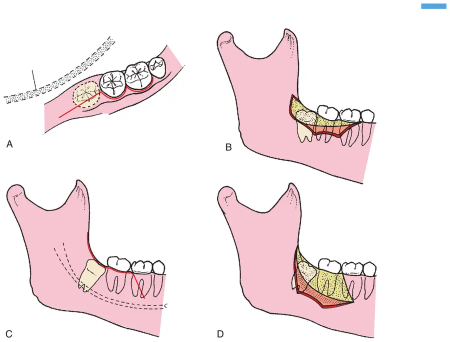

نسخه استخراجشده؛ ترجمه یا تأیید علمی انجام نشده است. وضعیت: captured
اصول و گامهای برداشتن دندانهای نهفته همان اصول و گامهای سایر کشیدنهای جراحی است. پنج گام پایه این تکنیک را میسازند:

هرچند رویکرد جراحی به برداشتن دندانهای نهفته شبیه سایر کشیدنهای جراحی است، مهم است که چند تفاوت مشخص را در ذهن نگه داری.
تفاوت ۱ — مقدار و جنس استخوان. کشیدن جراحی معمول یک دندان یا ریشه، برداشتن مقدار نسبتاً کمی استخوان میطلبد. ولی وقتی یک دندان نهفته — بهویژه مولر سوم مندیبل — کشیده میشود، مقدار استخوانی که باید برای تحویل دندان برداشته شود میتواند بهطور اساسی بیشتر باشد. این استخوان همچنین بهمراتب متراکمتر از کشیدنهای جراحی معمول است، و برداشتنش ابزار بهتر و درجهی بالاتری از دقت جراحی میطلبد.
تفاوت ۲ — سکشن بهعنوان قاعده، نه استثنا. دندانهای نهفته اغلب سکشن لازم دارند، در حالی که سایر انواع کشیدن ندارند. هرچند مولرهای رویشیافتهی ماگزیلا و مندیبل گاهی برای برداشتن تقسیم میشوند، این یک گام روتین در کشیدن آنها نیست.
ولی در اکثریت قابل توجهی از بیماران با مولر سوم نهفتهی مندیبل، جراح ملزم است دندان را تقسیم کند. پس جراح باید تجهیزات لازم برای سکشن و مهارت و تجربهی لازم برای تقسیم دندان در امتداد صفحات درست را داشته باشد.
تفاوت ۳ — لوکسیشن تقریباً وجود ندارد. یک تفاوت مهم میان برداشتن مولر سوم نهفتهی مندیبل و دندانی در جای دیگر دهان این است که تقریباً هیچ لوکسیشنی برای گشاد کردن صفحهی کورتیکال باکال یا لینگوال انجام نمیشود. بهجای آن، استخوان برداشته میشود و دندانها سکشن میشوند تا یک مسیر بیمانع برای تحویل دندان آماده شود.
و پیامد نادیده گرفتن این تفاوت سوم: اعمال نیروی بیش از حد میتواند به شکستگی نامطلوب دندان، استخوان باکال بیش از حد، مولر دوم مجاور، یا حتی کل مندیبل بینجامد.
و حالا مهمترین قضاوت این یونیت: برخلاف بیشتر انواع دیگر کشیدن جراحی، در برداشتن دندان نهفته جراح باید بتواند میان درجهی برداشت استخوان و سکشن، تعادل برقرار کند.
دو سرِ این ترازو، هر دو ممکناند و هر دو بد:
پس نقطهی تعادل: جراح باید مقدار کافی استخوان بردارد و دندان را به تعداد معقولی قطعه سکشن کند — و هدف این تعادل هم تسریع التیام است و هم به حداقل رساندن زمان عمل جراحی.